2026-10-10 已确认采用 5A、6B、10B；相应图已更新，绿色徽标表示已确认。图 03 同步采用 6B 的成功当拍窗口前移。每列一个周期，右边界采样提交。点击任意图片查看原尺寸。已确认：MEM 返回只持续一拍，返回当拍写入 OTB；最早下一拍参与 R 仲裁，无同拍旁路。实际响应仍须满足源内保序、当拍 rready 和 RR。最新容量规则：禁止 XAU 独占九项；本设计采用每 XAU 一项保底、六项共享，新增图 12 和 13。上游允许切换 src，公平性未定。
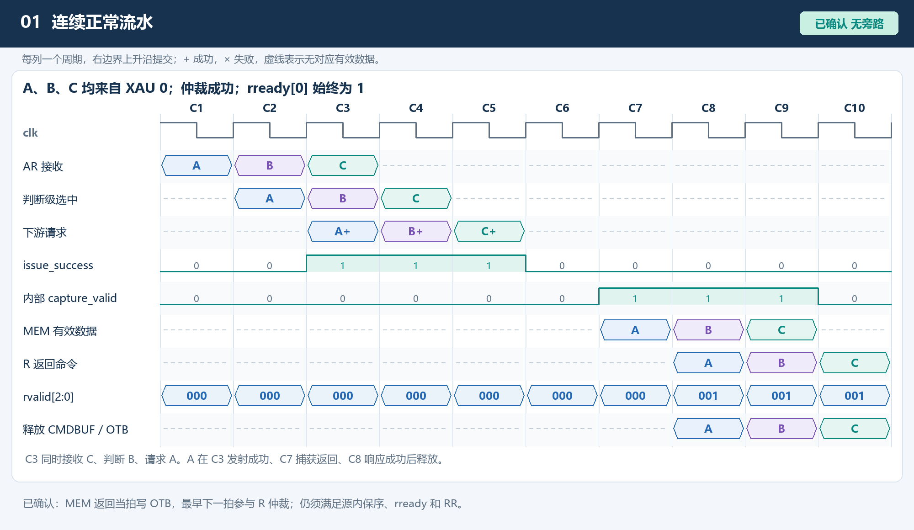
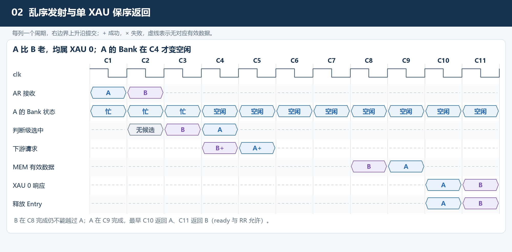
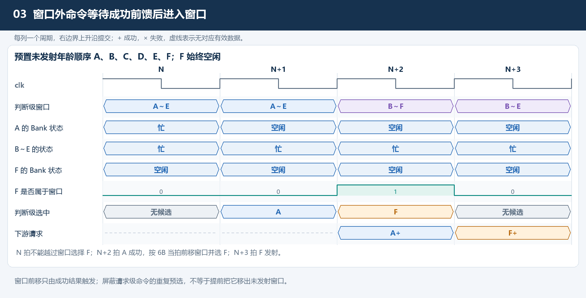
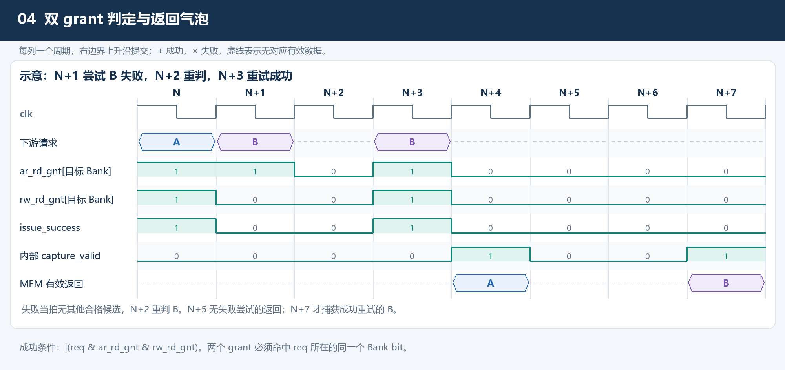
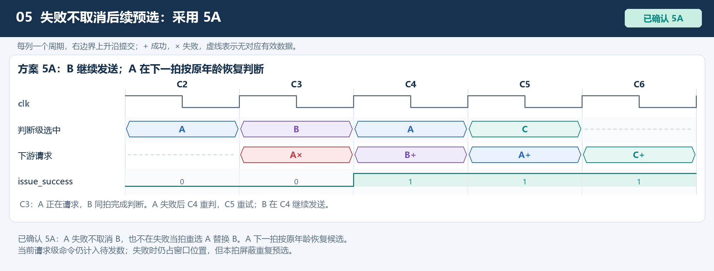
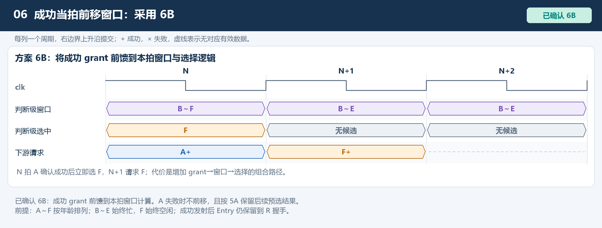
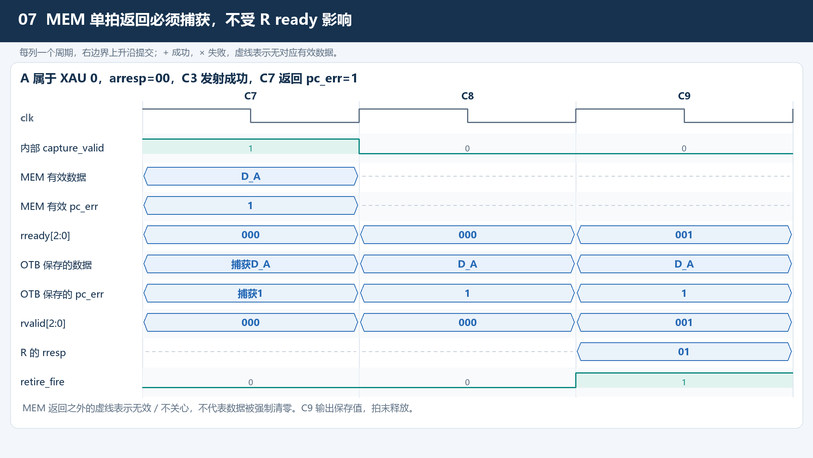
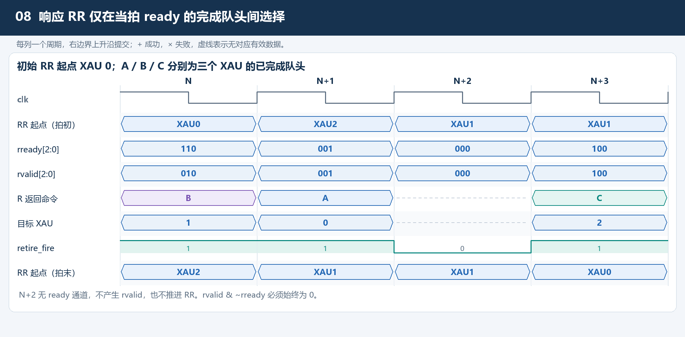
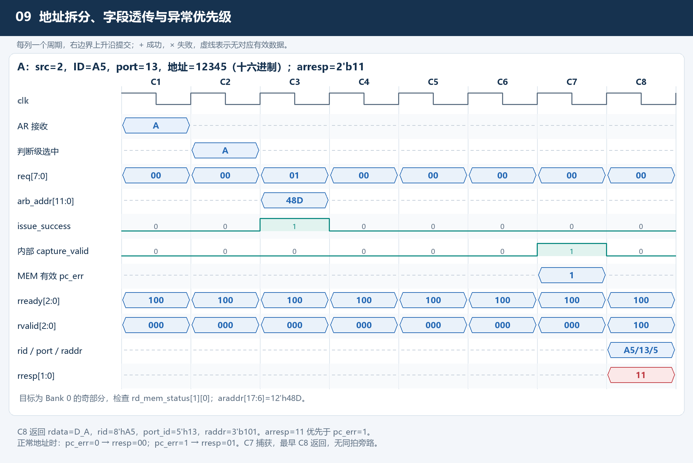
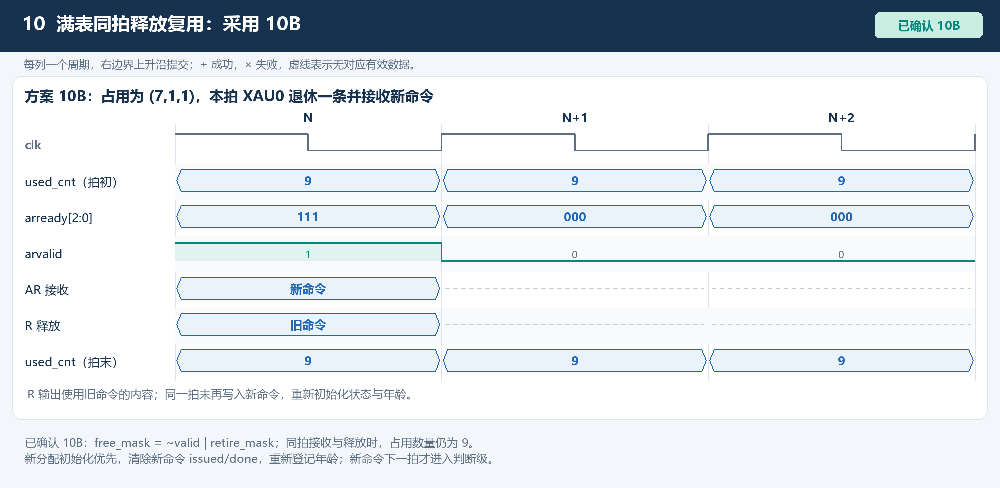
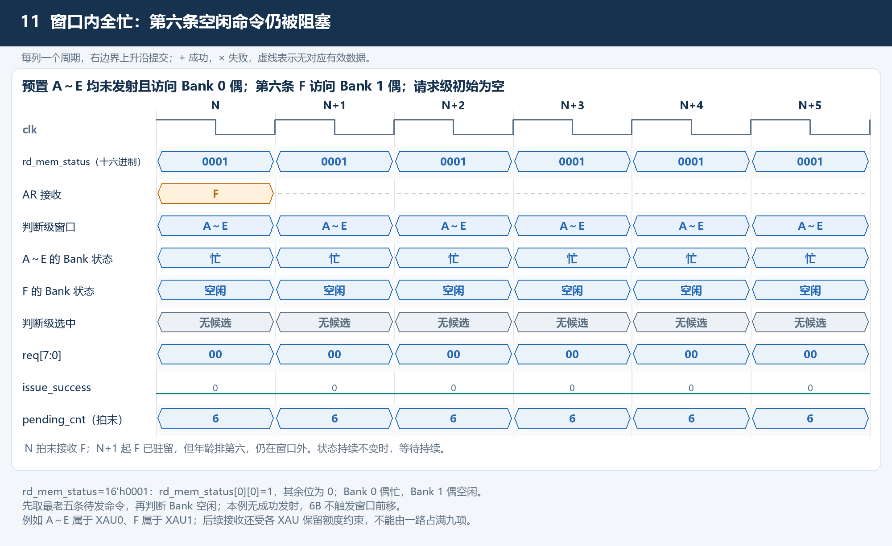
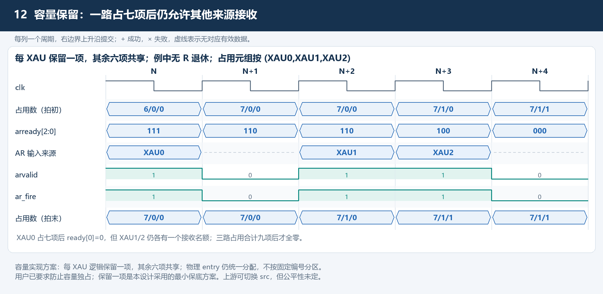
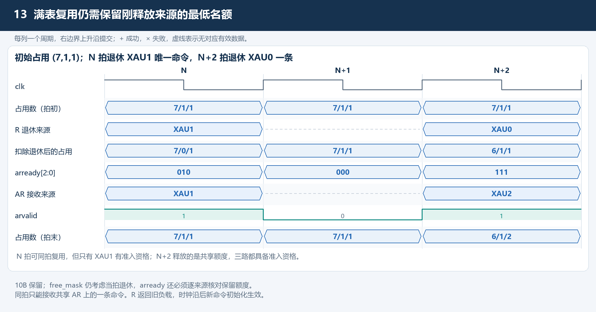